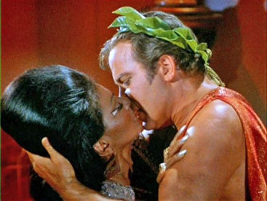
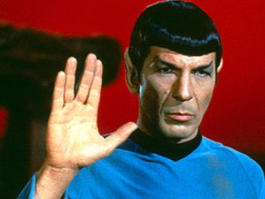
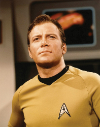

Fun Facts
Here is some fun information about Star Trek!
- Star Trek, the Original Series, broke social norms by being the first TV show that aired an episode containing an interracial kiss in 1968.
- The creator of Star Trek had orginally planned on Spock having a red skin tone
- Orginally, Spock wasn't supposed to eat or drink anything. However, he eventually was portrayed as a vegetarian.
- In the Orginal Series, buffalo went extinct. (This one just makes me laugh.)
- The creator of the Orginal Series, Gene Roddenberry, brought the script of the second pilot to the World Science Convention in Cleveland and recieved a standing ovation.
- William Shatner (Captain Kirk) has never seen Star Trek.
These facts are from memory of the show and io9. gizmodo.com
  These images are from (from left to right) pintrest.com, startrek.com, and nerdofiles.wordpress.com